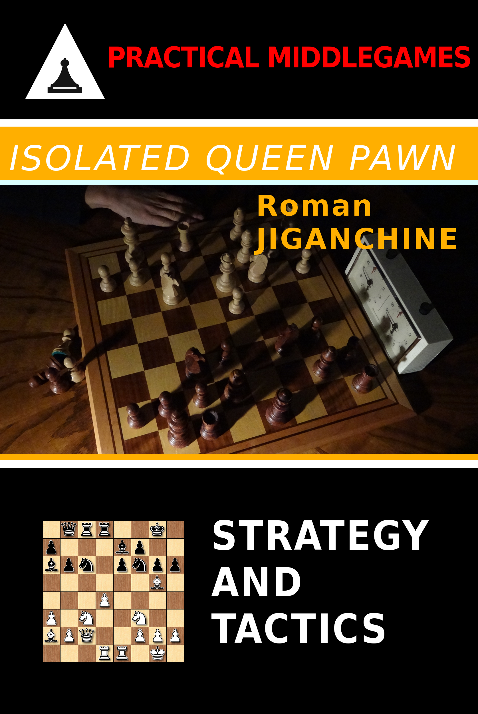

Isolated Queen Pawn
Created Thursday 07 December 2017
Amazon | Kobo | Google Play | Forward Chess | Paperback
Opening preparation in chess is always difficult and a lot of books have been written about this topic. The goal of this book is to illustrate how specific pawn structures should be studied for typical themes even if they arise from different openings. The pawn structure with (typically) White's isolated queen pawn on the 'd' file has been known for over a hundred years, and different players have shown best plans for both sides over the years. Historically, Mikhail Botvinnik popularized White's play, and positional players such as Karpov have performed well on the Black side of the same structure in several modern openings. At the same time, all strong modern grandmasters are well familiar with the principles of this pawn formation for both sides, and the goal of the book is to translate that knowledge on to the readers.

Backlinks:
Middlegame